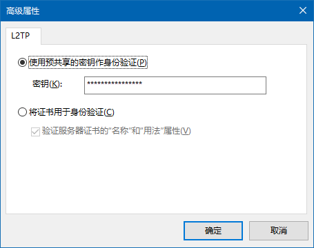

VPN简介
本VPN采用L2TP方式进行连接，服务器位于美国旧金山，如需使用请联系电子爱好者协会温恺林同学，暂不对北林在校生及往届生以外成员开放。使用说明
拨号电话本预设配置
Windows用户可以选择下载.pbk拨号电话本文件以减少麻烦，下载后需检查属性->安全->高级设置->L2TP，选择“使用预共享的密钥作身份验证”并输入预共享密钥
hamsterball，保存设置并连接。IPv4和IPv6的配置文件需要分别修改。
安卓、iOS、Windows 、Mac OS X和Linux手动配置
在设置L2TP类型VPN时需设置服务器地址为
159.203.226.154/域名ipv4.hamsterball.me或者IPv6地址2604:a880:1:20::16f:c001/域名ipv6.hamsterball.me。预共享密钥为hamsterball，加密方式选择L2TP/IPsec PSK。连接所需的用户名和密码需要联系维护人员添加，可能需要一定时间才能够使用。
部分手机可能无法通过IPv6进行连接，暂无解决方案。
访问内网地址
可以通过设置路由表以允许与国内和北林内网地址直接连接。路由表添加脚本正在整理中，很快会提供下载，如有不在脚本内的IP可以使用route命令自行添加，语法为
route add IP地址段 mask 子网掩码 网关注意事项
1、不建议在存在国产杀毒软件的计算机上使用本VPN，部分国内厂商的产品可能会留有后门
2、严禁在使用本VPN的时候打开迅雷、百度云、uTorrent等P2P下载软件
3、严禁使用本VPN进行垃圾邮件发送等违法行为
4、严禁使用本VPN从事涉嫌侵权的活动